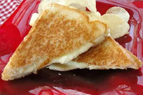

Lunch
Grilled Cheese and Mayo Sandwich

A grilled cheese sandwich with mayo which is a nice change from the usual grilled cheese
Its made with Pepper Jack cheese with Mayo on the outside
To make it child friendly leave out the Pepper Jack cheese
Ingredients
- 1 tablespoon mayonnaise
- 2 slices white bread
- 2 slices american cheese
- 1 slice Pepper Jack cheese
Method
- Spread 1/2 of the mayonnaise onto one side of a slice of bread; place, mayonnaise-side down, in a skillet.
Top with American and pepper Jack cheeses. Spread remaining mayonnaise onto one side of remaining
slice of bread; place, mayonnaise-side up, on top of cheese.
- Cook sandwich in the skillet over medium heat until cheese melts and bread is golden brown,
about 2 1/2 minutes per side.